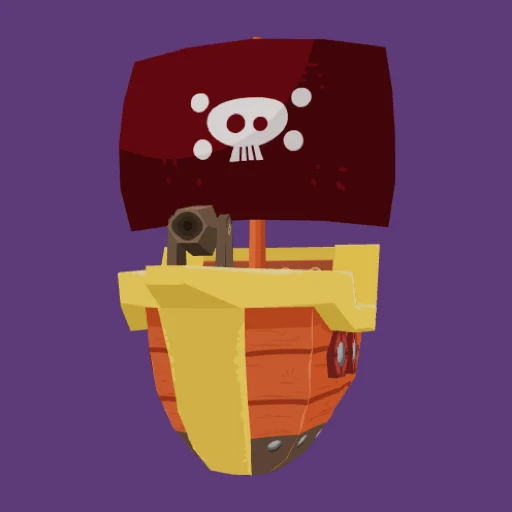

Pirate ship cartoon · 3D model
sketchfab.com
/3d-models/pirate-ship-cartoon-d5a047d1
1
Pirate ship cartoon
Reimers Racketeering
Download GLB
+ Add to
Embed
Share
Triangles
1.7k
Vertices
925
Textures
1
Materials
2
pirate
ship
cartoon
lowpoly
game-ready
Queued
Pirate ship cartoon

Pirate ship cartoon
Queued
vintage_camera_lowpoly
GLB ready · 3.2 MB · 14 meshes · 6 images
Sketchfab to glTF
Log
Summary
Raw
Added to queue
Reading public viewer…
Model: Pirate ship cartoon (by Reimers Racketeering)
Decrypting model_file.binz…
Decrypted · 1.3s
Textures 0/9
Packing ORM maps…
Converting to glTF…
Pirate ship cartoon
Queued
Export format
Max Texture Size
4K
4096px
2K
2048px
Page notifications
Sketchfab camera & lights
Model id in file name
Ask where to save
Debug ZIP
Intermediates instead of the export
History
Clear 1 finished download
Clear
Settings